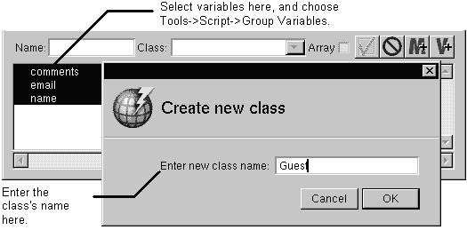

Table of Contents
Table of Contents
 Previous Section
Previous Section
Table of Contents
Previous Section
Select variables in the object browser.
Choose Tools->Script->Group Variables.
Enter the Class's name in the panel that opens.

The Group Variables command takes the selected variables and creates a new dictionary class out of them. The variables become the dictionary's attributes. The class's scope is the same as the variables used to create the class. That is, if you group variables in a component window, the class is visible only in that component. If you group variables in an application window, the class is visible in all components.
The Ungroup Variables command reverses the effects of a Group Variables command. You can use it on any dictionary class, regardless of if it was created using the Group Variables command.
 Next Section
Next Section